250 grs de harina 0000 (también se puede hacer con 000)
15 grs de levadura de cerveza fresca
40 grs de azúcar
30 grs de manteca
una pizca de sal
esencia de vainilla
1 huevo
80 cc de leche tibia
PARA LA SALSA DE CARAMELO (latwergue):
200 grs de azúcar
250 cc de agua caliente
200 de leche
50 grs de harina 0000
PARA LA COBERTURA (streussel):
150 grs de manteca
150 grs de azúcar
150 grs de harina 0000
Preparación
PARA LA MASA:
En una taza o compotera formar el pre-fermento con la levadura, 1 cdita azucar y 2 de leche. Disolver la levadura, agregar una cdita de harina y mezclar.
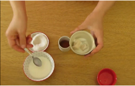
En un bowl colocar la harina formando un hueco en el centro.
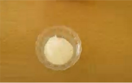
Agregar la esencia de vainilla, azucar, el huevo previamente batido y mezclar.
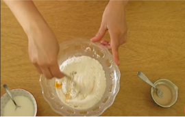
Incorporarle el pre-fermento y la leche tibia. Mezclar hasta unir bien.
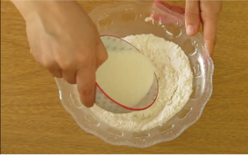
Volcar en la mesada y amasar integrando los ingredientes hasta formar una masa que no se pegue en la mesada.
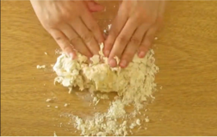
Agregar la manteca blanda en pequeños trozos e ir integrandola en la masa. ayudarse con un cornet o espatula si es necesario.
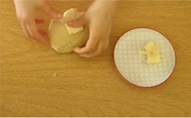
Dejar leudar en el bowl, tapada.
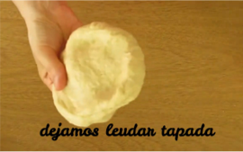
PARA LA SALSA DE CARAMELO:
En una cacerola al fuego, colocamos el azucar y dejamos formar el caramelo.
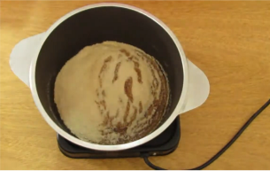
Aparte, mezclamos la harina,la leche y reservamos.
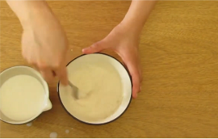
Cuando el caramelo tomó color, agregamos el agua hirviendoy mezclamos bien.
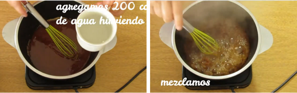
Luego, de a poco, incorporamos la mezcla de leche y harina e integramos hasta formar un caramelo cremoso.
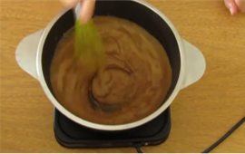
PARA LA COBERTURA:
En un bowl colocamos los tres ingredientes.
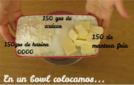
Formamos un arenado con los dedos.
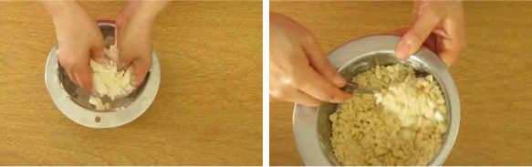
ARMADO:
Estiramos la masa con palo de amasar.
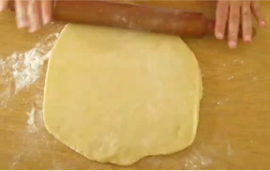
La colocamos y acomodamos en un molde preferentemente pizzero, previamente aceitado o rociado con rocío vegetal.
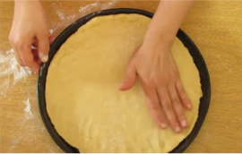
Encima agregamos la salsa de caramelo y la esparcimos homogeneamente.
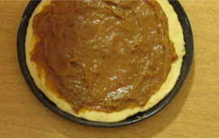
Espolvoreamos con la cobertura por toda la superficie en forma pareja.
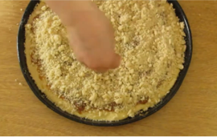
Dejamos leudar de 30 a 60 minutos.
Llevamos a horno precalentado a 180°, unos 25 a 30 minutos.
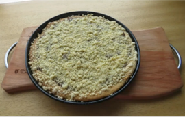
Dejar enfriar.
Cortar en cuadros para servir.
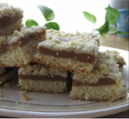
MIRÁ EL VIDEO DE LA PREPARACIÓN:
HISTORIA DE RIWWEL KUCHEN
Esta torta hecha con levadura, es un clásico de la repostería alemana - rusa
Los rusos la llaman Torta Alemana (РИВЕЛЬКУХЕ-немецкий насыпной пирог), ó Torta Rusa. Esto surge a raíz de los alemanes de vivían en la región del río Volga, un asentamiento alemán en territorio ruso, que los que los rusos habían convocado a que extranjeros, habitasen esa región, durante el reinado de Catalina La Grande. La mayor parte de esos extranjeros que acudieron a la llamada eran alemanes. Allí vivieron y mantuvieron sus costumbres. Luego con la llegada de la 2º Guerra Mundial, estos fueron perseguidos por los rusos, en coflicto con los alemanes.
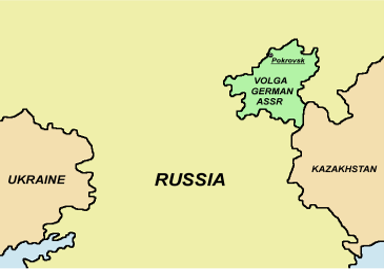
Los alemanes del Volga habían llegado a tener su propia república, la República Autónoma de los Alemanes del Volga dentro de la RSFS de Rusia en la Unión Soviética, fundada el 6 de enero de 1924. Sin embargo, en 1941, por decreto de Stalin, fue borrada del mapa (ukaz del 28 de agosto de 1941) y sus habitantes deportados a campos de concentración gulags de trabajos forzados ubicados en Kazajistán y Siberia16
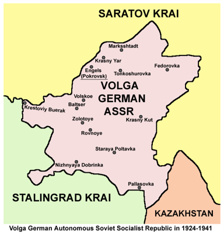
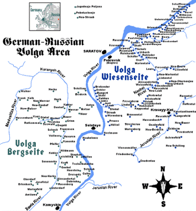
En 1864 las penurias se agudizaron debido a las pérdidas de los privilegios otorgados por Catalina la Grande. Esto provocó que fuertes contingentes de alemanes comenzaran a emigrar hacia América a partir de 1872. Sus destinos fueron Canadá y Estados Unidos especialmente entre los evangélicos, mientras que muchos católicos optaron por Brasil, Argentina y en menor medida Uruguay.
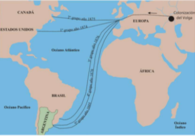
Actualmente la zona donde se ubicaban los Alemanes del Volga y donde alguna vez fueron república.